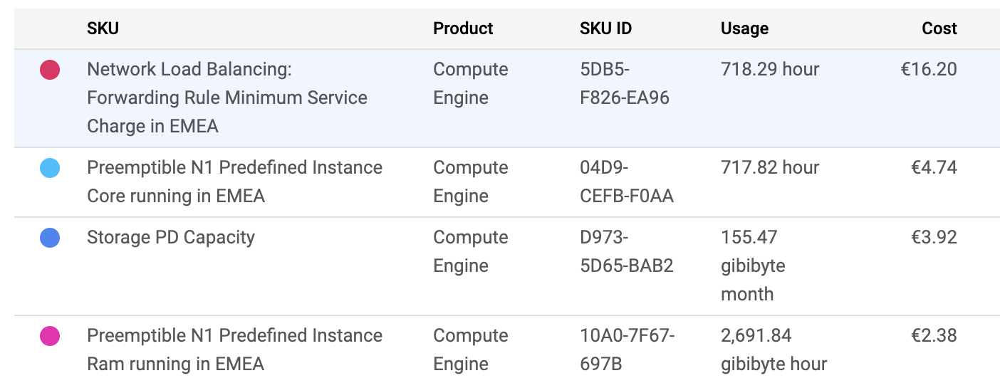
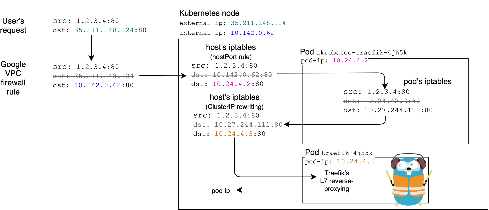

Avoid GKE's expensive load balancer by using hostPort
‚ö†Ô∏è Update 25 April 2020: Akrobateo has been EOL in January 2020 due to the company going out of business. Their blog post regarding the EOL isn’t available anymore and was probably shut down. Fortunately, the Wayback Machine has a snapshot of the post (7th January 2020). Here is an excerpt:
This is a sad day for team Kontena. We tried to build something amazing but our plans of creating business around open source software has failed. We couldn’t build a sustainable business. Despite all the effort, highs and lows, as of today, Kontena has ceased operations. The team is no more and the official support for Kontena products is no more available.
This is so sad… üò¢ Note that the Github repo kontena/akrobateo is still there (and has not been archived yet), but their Docker registry has been shut down which means most of this post is broken.
In my spare time, I maintain a tiny “playground” Kubernetes cluster on
GKE (helm charts
here). I quickly realized that
realized using Service type=LoadBalancer in GKE was spawning a Network
Load Balancer which
costs approximately $15 per month! In this post, I present a way of
avoiding the expensive Google Network Load Balancer by load balancing
in-cluster using akrobateo, which acts as a Service type=LoadBalancer
controller.
✅ Since this method uses the worker node’s external IPs, we can’t really say it is a real “load balancing” mechanism (i.e., this method doesn’t handle IP failover and doesn’t even tolerate node failures). But in my tiny setup, it makes a lot of sense to use that.

What happens is that GKE has a LoadBalancer controller running (I can’t see
it) and whenever I have a service with type: LoadBalancer, it will create
a L4 load balancer that balances 80 and 443 traffic across the nodes. Here
is a diagram of my current setup:

I use Traefik as a reverse-proxy and terminates the end-user TLS
connection. And since Traefik sets the status.loadBalancer.ingress on the
ingress objects, I can also use
ExternalDNS for setting
the A records automatically (I use Cloud DNS).
What if I stopped using the LoadBalancer service and use a NodePort instead? Two reasons against that:
- GKE restricts the ports you can use to
30000 and above. So I would end up with
https://kube.maelvls.dev:30145and I definitely don’t want that. I want to use 80 and 443. - Traefik uses the LoadBalancer service’s status in order to set the
ingresses’
status.loadBalancer.ingress, which in turn is used by ExternalDNS for setting theArecords automatically. I still want to be able to use ExternalDNS.
Thus, my goal is expose Traefik on 80 and 443 and still use the type: LoadBalancer which, in turn, allows me to use ExternalDNS.
I could use the service’s externalIPs but it isn’t supported by Traefik
and I would have to write some controller that would get the node internal
IP and then set the externalIPs with these.
Instead, I opted for the hostPort solution. No restriction on 80 or 443.
But I still have to automate a lot. Fortunately,
akrobateo does exactly what I need.
hostPortis a field you can set in a Pod. The hostPort is used by kube-proxy to forward traffic coming to the node with the destinationhostIP:hostPortto the pod itself.apiVersion: v1 kind: Pod metadata: name: akrobateo-lb-xmz8z spec: containers: - image: "registry.pharos.sh/kontenapharos/akrobateo-lb:0.1.1" ports: - containerPort: 443 hostPort: 443 # ⚠️ name: https protocol: TCP status: hostIP: 172.31.4.153 # ⚠️ hostIP and hostPort go together podIP: 192.168.1.38In this example pod, the pod runs on the node that has the hostIP
172.31.4.153. Any time traffic comes to the main network interface of the node with the TCP packet destinationdst: 172.31.4.153:443will be forwarded (i.e., DNATed) todst: 192.168.1.38:443.Note that this pod was actually created using a DeamonSet.
Akrobateo acts as an internal LoadBalancer service controller and replaces the gce-ingress-controller that GKE applies to every GKE cluster. It is inspired by K3S’ servicelb.
The akrobateo controller reads the LoadBalancer services and updates the
status.loadBalancer.ingress on these services with the node external IPs.
Whenever the external IPs change (since they are ephemeral), the controller
updates the service; Traefik does it job and finally ExternalDNS updates
the DNS records.
I might get some downtime with that, but for my use it’s just fine.
Setting up Akrobateo
That will install the akrobateo controller in the kube-system namespace:
k apply -k https://github.com/kontena/akrobateo/deploy
Since we want TCP 80 and 443 traffic to be able to hit the nodes. Let’s set a new firewall rule:
gcloud compute firewall-rules create akrobateo-fw-traefik --allow tcp:80,tcp:443 --source-ranges=0.0.0.0/0
Also, make sure we don’t have a L4 load balancer still running. The load balancer won’t get removed automatically.
% gcloud compute forwarding-rules list
Listed 0 items.
At this point, the LoadBalancer service should contain the IPs of the nodes:
kubectl -n traefik get services traefik -oyaml
apiVersion: v1
kind: Service
metadata:
name: traefik
namespace: traefik
spec:
clusterIP: 10.27.244.111
externalTrafficPolicy: Cluster
ports:
- name: http
nodePort: 30371
port: 80
protocol: TCP
targetPort: http
- name: https
nodePort: 32748
port: 443
protocol: TCP
targetPort: https
type: LoadBalancer
status:
loadBalancer:
ingress:
- ip: 35.211.248.124
- ip: 35.231.10.40
When displayed with kubectl get, we can see the two IPs from the
status.loadBalancer in the “EXTERNAL-IP” column:
% kubectl -n traefik get services -owide
NAME TYPE CLUSTER-IP EXTERNAL-IP PORT(S)
traefik LoadBalancer 10.27.244.111 35.211.248.124,35.231.10.40 80:30371/TCP,443:32748/TCP
Let’s check that these are the external IPs of the cluster nodes:
% kubectl get nodes -owide
NAME INTERNAL-IP EXTERNAL-IP
gke-august-period-234610-worker-0c5c84f5-rq25 10.142.0.61 35.231.10.40
gke-august-period-234610-worker-micro-cf12d79d-klh6 10.142.0.62 35.211.248.124
The kube-system/akrobateo controller will create a DeamonSet for every
LoadBalancer service it finds. The DeamonSet is created in the same
namespace as where the Service is:
% kubectl get ds -A
NAMESPACE NAME DESIRED CURRENT READY UP-TO-DATE AVAILABLE
traefik akrobateo-traefik 2 2 2 2 2
This DeamonSet runs one pod per node, each pod being responsible for proxying everything coming to the host’s 80 and 443 ports to Traefik (see description of the network flow below).
Let’s make sure ExternalDNS uses the correct IPs:
k -n external-dns logs -l app.kubernetes.io/name=external-dns -f
time="2020-01-18T17:26:31Z" level=debug msg="Endpoints generated from ingress: traefik/traefik-dashboard: [traefik.kube.maelvls.dev 0 IN A 35.211.248.124 [] traefik.kube.maelvls.dev 0 IN A 35.211.248.124 []]"
There still is a slight issue here: we would expect ExternalDNS to set a
A record with both IPs (35.211.248.124 and 35.231.10.40). But for some
reason, it doesn’t. As we have seen previously, the Akrobateo controller
has successfully updated the traefik/traefik service (type LoadBalancer).
And since Traefik is the ingress controller responsible for setting the
status.loadBalancer.ingress on ingresses, Traefik is probably the culprit
and might simply pick the first element.
Pros and cons
-
Isn’t
hostPorta bad practice? From the Kubernetes documentation:Don’t specify a
hostPortfor a Pod unless it is absolutely necessary. When you bind a Pod to ahostPort, it limits the number of places the Pod can be scheduled, because each <hostIP,hostPort,protocol> combination must be unique.[When using
hostPort,] if you don’t specify thehostIPandprotocolexplicitly, Kubernetes will use0.0.0.0as the defaulthostIPandTCPas the defaultprotocol.If you explicitly need to expose a Pod‚Äôs port on the node, consider using a NodePort Service before resorting to
hostPort.I do not fuly grasp what are the implications of using a hostPort. I guess it “litters” the iptables on the node? I’m not sure.
-
What if I have many more nodes, can it scale? I guess it won’t. Maybe one idea would be to leader-elect two or three nodes and put only these two or three IPs in
status.loadbalancer.ingress[]. If one of the nodes fails, the DNS will be updated; the client will be able to failover using the two or three IPs from the DNS record. -
Reliability? If the nodes that are advertised in the
ADNS records go down, no more ingress traffic possible. -
What if the node’s external-ip changes? Since these IPs are ephemeral, the controller will pick up this change and change the
status.loadBalancer.ingressfield of mytype: LoadBalancerservice.
How does it work?
Since I created a firewall rule for 80 and 443, GCE forwards the traffic
from 35.211.248.124 (the node’s external-ip) to 10.142.0.62 (the node’s
internal-ip). And since we use hostPort, kubelet creates some iptable
rules that redirect traffic to the pod running on that node:
% gcloud compute ssh gke-august-period-234610-worker-micro-cf12d79d-klh6 --command='sudo iptables-save' | egrep "(HOSTPORT|HP)"
-A PREROUTING -m comment --comment "kube hostport portals" -m addrtype --dst-type LOCAL -j KUBE-HOSTPORTS
-A OUTPUT -m comment --comment "kube hostport portals" -m addrtype --dst-type LOCAL -j KUBE-HOSTPORTS
-A PREROUTING -m comment --comment "kube hostport portals" -m addrtype --dst-type LOCAL -j KUBE-HOSTPORTS
# If the packet destination is local (localhost or 127.*), continue with KUBE-HOSTPORTS.
-A KUBE-HOSTPORTS -p tcp -m comment --comment "akrobateo-traefik-4jh5k_traefik hostport 443" -m tcp --dport 443 -j KUBE-HP-A7HWACIJNU4N3R5W
# If it is a TCP packet and the destication port is 443, continue with KUBE-HP-A7HWACIJNU4N3R5W
-A KUBE-HP-A7HWACIJNU4N3R5W -s 10.24.4.2/32 -m comment --comment "akrobateo-traefik-4jh5k_traefik hostport 443" -j KUBE-MARK-MASQ
# If the source IP of the packet is the akrobateo proxy pod, this packet is egressing: continue with KUBE-MARK-MASQ (masquarade)
-A KUBE-HP-A7HWACIJNU4N3R5W -p tcp -m comment --comment "akrobateo-traefik-4jh5k_traefik hostport 443" -m tcp -j DNAT --to-destination 10.24.4.2:443
# If the source wasnt this pod, then we assume it is some ingress. We replace the destination with the pods ClusterIP.
Then, when it is in the pod, the pod’s iptables will kick in and redirect. Nothing is actually running in the pod, except for the namespaced network stack. These pods have:
-
an init container that runs
sysctl -w net.ipv4.ip_forward=1(see k8s-networking-gce) in privileged mode, which enables forwarding inside the pod (does not affect the host). -
two containers set iptables and then
pause. In order to alter its namespaced TCP stack, we give the containers the NET_ADMIN capability (these rules only affect the pod, not the host).sudo iptables -t nat -I PREROUTING ! -s 10.27.244.111/32 -p TCP --dport 80 -j DNAT --to 10.27.244.111:80 sudo iptables -t nat -I POSTROUTING -d 10.27.244.111/32 -p TCP -j MASQUERADE sudo iptables -t nat -I PREROUTING ! -s 10.27.244.111/32 -p TCP --dport 443 -j DNAT --to 10.27.244.111:443 sudo iptables -t nat -I POSTROUTING -d 10.27.244.111/32 -p TCP -j MASQUERADE
Here is a diagram that shows the whole picture:

Akrobateo vs. K3s’s servicelb controller
K3s has this same idea of “service type
loadbalancer controller” embedded to K3s itself. The controller, called
“servicelb”
(servicelb/controller.go)
runs as a Deployment and a DeamonSet running
klipper-lb that uses pod’s
hostPort and the pod’s iptables to forward traffic to the cluster-ip of
the service. I don’t know yet what are the differences between Akrobateo
and K3s’ servicelb. Note that Akrobateo itself is based on servicelb.
Recap
- Akrobateo is a controller that watches Services of
type: LoadBalancer; - When it finds one, creates a deamonset of empty pods.
- The task of these empty pods is to set one iptable rule that redirects
traffic to the ClusterIP of the
type: LoadBalancerservice. - Akrobateo also sets the Service’s status with the loadBalancer IP.
- Benefit: since the loadBalancer IP is properly set, ExternalDNS works!
Update 22 April 2020:
- Akrobateo is EOL since January 2020 üò¢ I added a note about that.
- Better introduction.
- Explain what I mean by
hostPort. - In “Isn’t
hostPorta bad practice?", I replaced “I don’t know” with a link to the Kubernetes documentation that mention why I should avoid hostPort. - In “What if I have many more nodes, can it scale?", I replaced “I don’t know” with a proposition of solution.
- Detail how K3s’ servicelb is similar to Akrobateo.